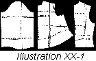
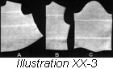
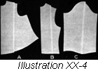
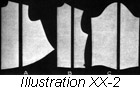
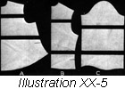
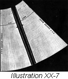
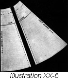
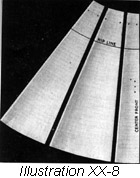
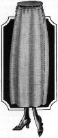

1926—The New-Way Course in Fashionable Clothes-Making
Lesson 20—Pattern
Making the Model Pattern
As an expert clothes-maker, making all your own pretty things to wear at home, you will need a model pattern. It will enable you to save a great deal of time, and will make the altering of patterns to your size much easier. The making of the model pattern itself is very simple—but first a commercial pattern must be correctly altered as it is used as a foundation from which the model pattern is constructed.
Make your model pattern of cambric or heavy unbleached muslin. Grey is the best color to use, although white is just as appropriate. Do all your sewing with heavy thread, and remember that all the measurements must be exact to a fraction of an inch, for this model pattern will later be used as a base or foundation for the clothes you make at home. First let us see how the commercial pattern is altered.
Altering the Commercial Pattern (Illustrations XX-1, 2, 3, 4, and 5)
Before altering the various parts of the pattern, press each part smoothly with a warm iron. Be sure that the iron isn't hot enough to scorch the paper. Now lay the pattern flat on the table, with the seams on the underarm matched. You are going to take the same measurements on the pattern to correspond with the measurements taken in the previous lesson.
Use a plain shirt waist pattern as near your size as it is possible to obtain. A shirt waist or one seam sleeve is used with this pattern and a two-piece skirt should be used. You may find after careful measurement that the pattern needs no alterations, but should changes be necessary the following instructions should be followed. You have learned to take measurements in Lesson 19. Be very sure that you have mastered this lesson, for on this will depend your success or failure of pattern alteration and garment fitting.
Study your pattern carefully. Study the diagram given in the illustration before measuring or altering your pattern. Be sure to learn if seams have been allowed on your pattern as the measures taken on the pattern must be from stitching line to stitching line and not from the edge of seams.
Sometimes it is necessary to make an alteration at the center front, but always correct the faults as nearly as possible on the side front line, making the least possible change at the center front.
- Use for this model a plain shirt waist pattern, having a high collar. Do not use a model with low or convertible collar.
- Press the pattern and identify each piece—if not familiar with patterns, write the name on each piece so you will not have to refer again to cutting chart given with pattern.
- With a pencil and rule mark your pattern, writing the name on each line as diagram in illustration is marked. Illustration XX-1.
- Now measure these lines and jot down the measurements, being sure list of measurements taken corresponds exactly with the list given for body measurements. Page 64, Lesson 19.
- Line marked side front line in diagram is 6 inches from center front.
- Line marked side back line in diagram is 5 inches from center back.
- Line marked bust line falls just below the armcye on both front and back.
- The waist line is marked on your pattern either with perforations or notches.
- The width of chest line is 3 1/2 inches below the shoulder seam, measured as dotted line indicates.
- Width of back line is 3 1/2 inches from shoulder seam and is measured in exactly the same way as width of chest line.
- The alteration line across the waist is 1 1/2 inches above the waist line measured at the underarm seam. This line will be more than 1 1/2 inches above the waist line at the center front and it may be a little less than this above the waist line in the back.
- Your pattern is now correctly marked for measuring. Pin the pattern together at underarm seam and measure the bust line, from center front to center back. Be sure that you put this measurement down. Compare this with the body measurement you have taken. Measure the chest line on both front and back.
Find the difference between one-half the width of chest measure and the chest line marked on pattern. Also the difference between one-half the width of the back and the length of line marked width of back.
Find the difference between the measure on the bust line and one-half the bust measure. - If the pattern is too small on these lines, split from shoulder to bottom at the side front and side back line (Fig. A and B) and insert a piece of paper one-fourth the amount needed to make the lining large enough.
Remember we have only one-half of our pattern and must use one-half the body measures. We have two lines on the pattern on which to add or take from the size of the garment, so one-half of the needed amount is added to or taken from the pattern on the front and back. The amount needed at the bust and the chest line may not be the same. In this case graduate the amount added or taken from the pattern to give the proper size on each line. Illustration XX-2 and 4. - If the measurements of the pattern show that the pattern is too short or too long from the bust line to shoulder (Fig. A and B) alter the necessary amount at the chest line. This is done by either laying a fold in the pattern to take out the needed amount or by cutting the pattern along this line and adding the needed amount. If the pattern is too short or too long from bust to waistline (Fig. A and B), either add or take out the correct amount at the line one and one-half inches above the waist line. Illustration XX-3 and 5.
- To lengthen the sleeve, cut the pattern straight across at a point half-way between the elbow and the armcye and also at the point half-way between the elbow and the wrist. Separate the pieces of the pattern and paste in one-half the needed length above the elbow and the other half below. Sometimes it is found necessary to lengthen the sleeve only above the elbow if the arm is unusually long from elbow to shoulder; at other times it may be found necessary to lengthen only below the elbow. Always be sure that the line measurements of the pattern are carefully compared with the measurements of your body.
- Sleeves may be shortened at the same points mentioned above by folding in the amount necessary to secure the desired length. To add fulness to the sleeve, cut the pattern from the top of the shoulder to the wrist and add the amount required by separating the piece and inserting the paper as in the other parts of the pattern. On the other hand, if you find that the pattern has too much fulness, fold in at this line and trim the top and bottom even.
To Alter the Skirt Pattern (Illustrations XX-6, 7 and 8)
Proceed to alter the skirt pattern just as you did to alter the waist part of the pattern. Pin the pattern together with the notches matching and measure, comparing the measurements previously taken. These consist of the waist, hips and length. In buying patterns, be sure that you secure as near the correct skirt size as possible, as too many alterations on a skirt spoil the lines. If the width of the pattern is to be increased the full length of the skirt, cut the pattern from the waist to bottom at center of each gore, separate the pieces and add one-quarter the necessary amount exactly as you did in the waist. If the alterations are very slight, they may be taken in or left out at the seams (Illustrations XX-6 and 7) but when the entire length of the skirt must have several inches added to its width, then you must proceed as indicated. After cutting the pattern from waist to bottom in front, do the same in the back of the pattern, adding again one-quarter of the amount needed. The pattern should now measure one-half the body measure.
- To add length to the skirt, cut each gore straight across from side to side just 11 inches below the waist line.
- Cut across the pattern four inches above the bottom of the skirt and add one-half the required amount at each point.
- Be very sure the same alterations are made on both pieces of your pattern.
- It may be found necessary to increase the waist measure of the pattern. Add one-fourth the required amount on each seam, graduating to the hip line. To decrease the waist measure, take one-quarter the amount off at the seam, graduating to the hip line. To decrease both the hip and waist, take the required amount off the seams at these points, graduating toward the bottom of the skirt.
- Illustration XX-8 shows the lines of alterations on a circular skirt.
- In connection with the alterations of the commercial pattern we suggest that you study the illustrations carefully. The directions are given for waist having only shoulder and underarm seams, and for a skirt having only two seams. The sleeve alterations apply to one-seam sleeves and may not be used on sleeve-patterns made with two seams.
- Now, having made all necessary alterations in the commercial pattern, you are ready to proceed with the cutting. Pin the parts of the pattern on the muslin or cambric as directed in the chart that comes with the pattern, and cut. Be sure that the seam allowances are made. When all the pieces are correctly cut out, baste together according to notches. Your model lining is now ready to fit.
Fitting the Waist of the Model Lining
- Your waist lining should be basted together with heavy thread so that it does not rip easily. Put it on with the seam on the outside and fasten it where the opening is to be. Pin a tape around the waist over the lining and arrange the fulness as you think best. Be sure that the underarm seam comes directly under the arm, for if it is too much to the back or too much to the front, the arms cannot be comfortably lifted. If you find that there is too much fulness in the waist under the arm, pin the underarm seam in as far as necessary; if the opposite is true and the waist is too tight under the arm, let this seam out the sufficient amount.
- The normal shoulder seam should come directly on the top of the shoulder. If wrinkles appear running from the armcye up toward the base of the neck, open the shoulder seam and draw the front of the lining towards the point of the shoulder until the wrinkles disappear. If the wrinkles run from the center of the chest toward the shoulder, move the front of the waist toward the neckline. Perhaps the armcye is too loose; in this case, take up on the shoulder and under the arm seam. But if the armcye is too tight, gash the armcye at right angles to the edge of the material and trim out the curve after the waist is removed from the person.
- If fulness appears at the front of the armcye take it in by making a small dart one and one-half inches in front of underarm seam running toward waist line. Run this in far enough so that no point is visible at the end of the dart. If the person for whom the model lining is being made is round-shouldered there is apt to be fulness at the back of the armcye. Make a small dart one and one-half inches back of underarm seam running toward the waist line. This alteration is necessary only when the shoulders are very round.
- Now a collar must be fitted on the lining. Measure the collar pattern and compare the measurements with those taken of the neck. You remember, all your body measurements have been indicated on the chart on page 64. If the collar is too tight, open it at the front and insert one-half the required amount, adding the other half at the ends, dividing it equally between the two ends. If the collar is too large, fold in at these points.
- Sometimes the collar is found to be too loose at the top yet just-right at the bottom. In this case, take a small dart on either side of the front, graduating it toward the bottom. Or if the collar is too tight, let out at these points. Another dart should be taken on either side of the back, the amount taken up depending upon the fulness at the throat, or the collar may be left out at these points if too tight. If the collar is just right at the top and too tight at the bottom, slash the collar at a point on either side of the front and on either side of the back, and add the amount necessary. If the collar is too large at the bottom and just right at the top, take in at these same points.
- You may find that the collar is too high, in which case you may fold in from end to end straight across the collar. Or if it is too low, split the collar from end to end and add the needed amount.
- Now return again to the waistline of the pattern. Pin the fulness to the tape which you have pinned over the pattern at the waistline and be sure that it is correctly adjusted so that there is not too much fulness in the back and too little in the front. When the waist is entirely fitted, slip on the sleeves and pin at the top of the shoulder seam. With the arm hanging in normal position at the side, arrange the sleeve to balance correctly from the shoulder.
- If you find that the sleeve is too large, take in at the seam; if too small, let out at the seam. Pin the sleeve and the armcye together at a point that will bring the seam of the sleeve directly down the inside of the arm. Pin the sleeve from this point either way, allowing fulness enough so the sleeve will not draw. After the sleeve is pinned in the armcye turn the bottom of the sleeve to the required length.
To Fit the Skirt (Illustration XX-10)
- Pin a belt around the waist, with the opening where the opening of the skirt is to be. Put the skirt on and attach the center of the front of the skirt to the center front of the belt, and the center of the back of the skirt to the center back of the belt. The side seams of the skirt should be in direct line with the side seams of the waist. Attach the seams to the belt at these points. If there is fulness in the back of the skirt arrange it on the belt so that the skirt falls in graceful lines. Do not allow too much fulness at the center at the back, but scatter it well across the whole space between the seams.
- The front of the skirt must be fitted in accordance to the figure. If the figure is very flat in front, it will be found necessary to lift the skirt in the back in order that the front may hang straight. This lifting should graduate from the center of the back to the side seams. If the figure is very full in front, it is sometimes necessary to lift the front, leaving the back in its normal position. If the hips and waist are too tight, let out or take in on the seams. If the skirt is too tight in both hips and waist, it may be lifted all the way around and thus gain an added width.
Finding the Length of the Skirt
- It is very important that the correct length of the skirt be obtained. Once you find the length most becoming to you, you can preserve it on your model pattern and have it always ready when ever you make a dress or skirt. It saves considerable time and trouble.
- To find the exact length of the skirt, use the skirt marker on the dressmaker's square which is notched in the number of inches from the floor. Or a cardboard may be notched in inches and used in the same manner. With tailor's chalk or pins mark the line indicating the distance the skirt is to hang from the floor, beginning at the front and working around to the right. The person upon whom the skirt is being fitted should remain perfectly stationery; the person who is doing the fitting should move around to pin or mark the length of the skirt.
- Perhaps you have no one to assist you in finding the length of your model skirt pattern. If so, you can proceed in the following manner: place one end of the yard stick on the floor on a line with the skirt, so that the stick does not push the skirt towards the figure. Allow the other end of the yard stick to rest against the figure and place a pin at this point. Move the yard stick two or three inches and pin again at the top until you have pinned all around the skirt. Now remove the skirt, place it on the work table (or on the ironing board as for ironing) and place the yard stick the same number of inches above the line of pins you just put in as you wish your skirt to be shortened at the bottom. The small numbers on the yard stick should be at the top. Mark with pin or tailor's chalk at the bottom of the yard stick every two or three inches around the skirt. This line will be the bottom of the skirt.
- With colored thread, baste over the line of pins or chalk markings. Use colored thread also to indicate any alterations made in the seam of the skirt. Similarly, mark on the belt exactly where the seams come and mark along the top of the belt on the inside of the skirt. Now remove the belt and trim off the extra length above the colored marking.
- Mark the alterations in the waist just as they are now pinned, and with colored basing thread mark the line at the bottom of the tape at the waist. On this tape mark the point where the center front of the waist comes, where the underarm seams come and the center of the back. Mark the center front of the waist with colored thread.
- You are now ready to remove the bastings from the seams of the waist and pin the fronts together, seeing that the alterations are alike on each side of the front. If they are not, make them so by taking one-half of the difference off at one side and one-half of the other. For example: if the right shoulder seam is one-half inch above the left shoulder seam on the front, lift the left shoulder seam one-quarter of an inch and drop the right shoulder seam one-quarter of an inch; do the same to the shoulder seams on the back and the same to the underarm seams if the same difference is evident there. The mark for the waistline may be changed in the same way if it is higher on one side of the waist than the other. Of course, we do not expect you to have so many alterations to do in your model pattern, but we are mentioning them here if by any chance you meet with any of these difficulties.
- If you have followed the directions outlined in this lesson carefully, you now have a model dress pattern over which all other patterns may be quickly and easily altered. This pattern should be perfect in fit, conforming in every detail to the outline of your particular figure. After the pattern is basted together and all alterations made, try it on once again; baste the sleeves in and the waist and skirt on the belt.